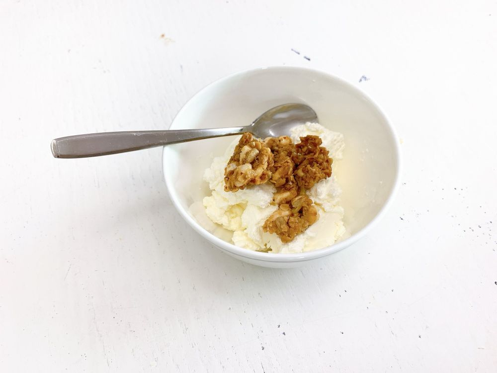

こんにちは😃
ひいだよ🍓

ラジオでも話したけど。。
本当にヨーグルトハマりすぎてる🥺
いつもこうしてグラノーラとか
ナッツとかと一緒に食べるんだ🥣
ちょっとグラノーラ入れすぎた😂
この写真に写ってる白い四角いのが
めっちゃ美味しいの！！
韓国語だと
「코코넛 청크（ココナッツチョンク）」って
いうんだけど日本語だとなんだろう？？
ココナッツフレークでもないし。。
でもとにかく美味しい🥺
ぜひ見つけたら食べてみてね〜！笑
あと今日は久しぶりに顔が浮腫みました🤦🏻♀️
というか右目だけ👀
右目だけ一重になってたので
朝起きてから必死に保冷剤とあったかいのを
交互に当ててました😵
そしたらちゃんと
元どおりになったよ🤭
이호も目が浮腫んじゃったときは
ぜひこの方法やってみてね〜笑
ではまたっ
어제 라디오 들어줬어요~???
오늘의 TMI💡
어제 6시쯤에 이불을 빨래 해서
건조기에 돌렸는데 안 말라서... ㅠ
얇은 이불로 잤더니 추워서 일어났다ㅎㅎㅎ
그리고 목도 아파졌어...ㅠㅠ
그래도 물 많이 마셨더니
지금은 괜찮아져서 다행이다:)
오늘은 두꺼운 이불로 자야지🥱
추천메뉴는...브리또🌯
지금 타코🔔에서 “김치 브리또” 라는거 있대요!!!
어떤건지 궁금하다🤭
ばいばーい👋🏻
ひいまる🥟